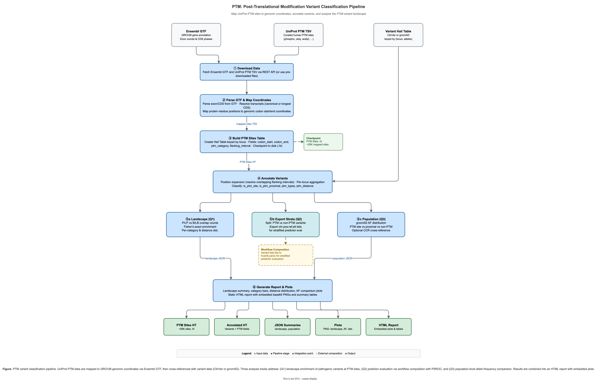

PTM: Post-Translational Modification Variant Classification¶
PTM is a module within hvantk that maps post-translational modification sites to genomic coordinates, cross-references them with genetic variants, and analyzes the PTM-variant landscape across the human proteome.

Figure 1. PTM variant classification pipeline. UniProt PTM sites are mapped to GRCh38 genomic coordinates via Ensembl GTF, then cross-referenced with variant data. Three analysis tracks address landscape enrichment (Q1), predictor evaluation via PSROC composition (Q2), and population-level allele frequency comparison (Q3).
Overview¶
The PTM module provides an end-to-end pipeline for studying the relationship between genetic variants and protein post-translational modification sites:
Primary Functionality¶
- Coordinate Mapping - Map UniProt PTM residue positions to GRCh38 genomic coordinates via Ensembl GTF
- Variant Annotation - Annotate variant tables with PTM site proximity (at-site, proximal, non-PTM)
- Landscape Analysis (Q1) - PTM-variant overlap counts and enrichment (Fisher's exact test)
- Population Analysis (Q3) - Allele frequency distributions at PTM sites vs background
- Visualization - Publication-quality plots and HTML reports
Key Features¶
- Local Coordinate Mapping - No Ensembl REST API dependency; uses GTF-based transcript resolution
- Split Codon Handling - Correctly handles codons spanning exon boundaries
- Position Expansion - Resolves overlapping flanking intervals via per-position aggregation
- Workflow Composition - Predictor evaluation (Q2) composes with PSROC via exported variant strata
Quick Start¶
Command-Line Interface¶
# Phase 1-2: Build PTM sites Hail Table
hvantk ptm build \
--output-dir data/ptm/ \
--output-ht data/ptm/ptm_sites.ht
# Phase 3: Annotate variants with PTM site information
hvantk ptm annotate \
--variants-ht clinvar.ht \
--ptm-ht data/ptm/ptm_sites.ht \
-o clinvar_ptm.ht
# Phase 4 Q1: Landscape analysis (PTM-variant overlap and enrichment)
hvantk ptm landscape \
--clinvar-ht clinvar.ht \
--ptm-ht data/ptm/ptm_sites.ht \
-o results/landscape/ \
--save-plots
# Phase 4 Q2: Export strata for PSROC (composed workflow)
hvantk ptm export-strata --annotated-ht clinvar_ptm.ht -o strata/
hvantk psroc --variants strata/ptm_variants.txt --clinvar-ht clinvar.ht ...
hvantk psroc --variants strata/non_ptm_variants.txt --clinvar-ht clinvar.ht ...
# Phase 4 Q3: Population-level allele frequency analysis
hvantk ptm population \
--gnomad-ht gnomad.ht \
--ptm-ht data/ptm/ptm_sites.ht \
-o results/population/ \
--save-plots
# Phase 5: Generate HTML report
hvantk ptm report -o report.html \
--landscape-json results/landscape/landscape_summary.json \
--population-json results/population/population_summary.json
Python API¶
from hvantk.algorithms.ptm import PTMBuildConfig, ptm_build_pipeline_core
# Build PTM sites table
config = PTMBuildConfig(
output_dir="data/ptm/",
output_ht="data/ptm/ptm_sites.ht",
)
result = ptm_build_pipeline_core(config)
print(f"Mapped {result.n_mapped}/{result.n_total} sites")
# Annotate variants
import hail as hl
from hvantk.algorithms.ptm import annotate_variants_with_ptm
variants = hl.read_table("clinvar.ht")
ptm = hl.read_table("data/ptm/ptm_sites.ht")
annotated = annotate_variants_with_ptm(variants, ptm)
# Landscape analysis
from hvantk.algorithms.ptm import ptm_landscape
result = ptm_landscape(variants, ptm, "results/landscape/")
print(result.summary())
# Population analysis
from hvantk.algorithms.ptm import ptm_population
gnomad = hl.read_table("gnomad.ht")
pop_result = ptm_population(gnomad, ptm, "results/population/")
print(pop_result.summary())
Workflow¶
The PTM pipeline is organized into phases:
| Phase | Command | Description |
|---|---|---|
| 1-2 | hvantk ptm build |
Download PTM data, map to genome, build Hail Table |
| 3 | hvantk ptm annotate |
Annotate variants with PTM site proximity |
| 4 Q1 | hvantk ptm landscape |
PTM-variant overlap and enrichment |
| 4 Q2 | hvantk ptm export-strata + hvantk psroc |
Predictor evaluation at PTM vs non-PTM sites |
| 4 Q3 | hvantk ptm population |
Population-level AF analysis |
| 5 | hvantk ptm report |
HTML report with embedded plots |
Q2: Predictor Evaluation (Composed Workflow)¶
Predictor evaluation at PTM sites is achieved by composing ptm export-strata with the standalone psroc pipeline, rather than duplicating PSROC logic inside the PTM module. This keeps each workflow module self-contained.
# 1. Annotate ClinVar with PTM info
hvantk ptm annotate --variants-ht clinvar.ht --ptm-ht ptm_sites.ht -o clinvar_ptm.ht
# 2. Export variant strata (PTM vs non-PTM)
hvantk ptm export-strata --annotated-ht clinvar_ptm.ht -o strata/
# 3. Run PSROC independently on each stratum
hvantk psroc --variants strata/ptm_variants.txt --clinvar-ht clinvar.ht --dbnsfp-ht dbnsfp.ht ...
hvantk psroc --variants strata/non_ptm_variants.txt --clinvar-ht clinvar.ht --dbnsfp-ht dbnsfp.ht ...
Build Command Details¶
Input Options¶
The build command can download data automatically or use pre-downloaded files:
# Automatic download (default)
hvantk ptm build --output-dir data/ptm/ --output-ht data/ptm/ptm_sites.ht
# Pre-downloaded files
hvantk ptm build \
--gtf-path data/ref/Homo_sapiens.GRCh38.113.gtf.gz \
--ptm-tsv data/ptm/uniprot-ptm-human.tsv \
--output-dir data/ptm/ \
--output-ht data/ptm/ptm_sites.ht
Build Options¶
| Option | Default | Description |
|---|---|---|
--output-dir |
(required) | Directory for intermediate files |
--output-ht |
(required) | Output Hail Table path |
--gtf-path |
auto-download | Pre-downloaded Ensembl GTF |
--ptm-tsv |
auto-download | Pre-downloaded UniProt PTM TSV |
--flanking-codons |
5 | Flanking codons for proximal window |
--overwrite |
false | Overwrite existing outputs |
Annotation Fields¶
The annotate command adds these fields to the variant table:
| Field | Type | Description |
|---|---|---|
is_ptm_site |
bool | Variant falls at a PTM-modified codon |
is_ptm_proximal |
bool | Variant within flanking window (not at codon) |
ptm_types |
set\<str> | PTM categories (e.g., phosphorylation, ubiquitination) |
ptm_distance |
int | Distance in residues to nearest PTM site |
Output Files¶
Landscape (Q1)¶
| File | Description |
|---|---|
landscape_summary.json |
Variant counts, enrichment OR/p-value, per-category overlaps, distance distribution |
landscape_summary.png |
P/LP and B/LB counts at PTM site vs proximal vs non-PTM (with --save-plots) |
overlap_by_category.png |
P/LP counts per PTM category (with --save-plots) |
distance_distribution.png |
P/LP distance to nearest PTM site (with --save-plots) |
Population (Q3)¶
| File | Description |
|---|---|
population_summary.json |
AF statistics, variant counts |
population_af.png |
Mean AF comparison across PTM strata (with --save-plots) |
Report¶
| File | Description |
|---|---|
report.html |
Static HTML report with embedded plots, summary cards, and methods section |
Data Sources¶
UniProt PTM Data¶
Curated post-translational modification sites from UniProt (human, reviewed/Swiss-Prot). The build command queries the UniProt API automatically or accepts a pre-downloaded TSV.
Ensembl GTF¶
Gene annotation (exon coordinates, CDS phases) from Ensembl GRCh38. Used for mapping protein residue positions to genomic coordinates. Downloaded automatically or provided via --gtf-path.
Module Structure¶
hvantk/algorithms/ptm/
├── __init__.py # Module exports
├── constants.py # PTM-specific constants (URLs, field names, categories)
├── mapper.py # GTF parser and residue-to-genomic coordinate mapper
├── pipeline.py # Build pipeline orchestration (Phases 1-2)
├── annotate.py # Variant-PTM annotation (Phase 3)
├── analysis.py # Landscape and population analysis (Phase 4)
├── plot.py # Visualization functions (Phase 5)
└── report.py # HTML report generation (Phase 5)